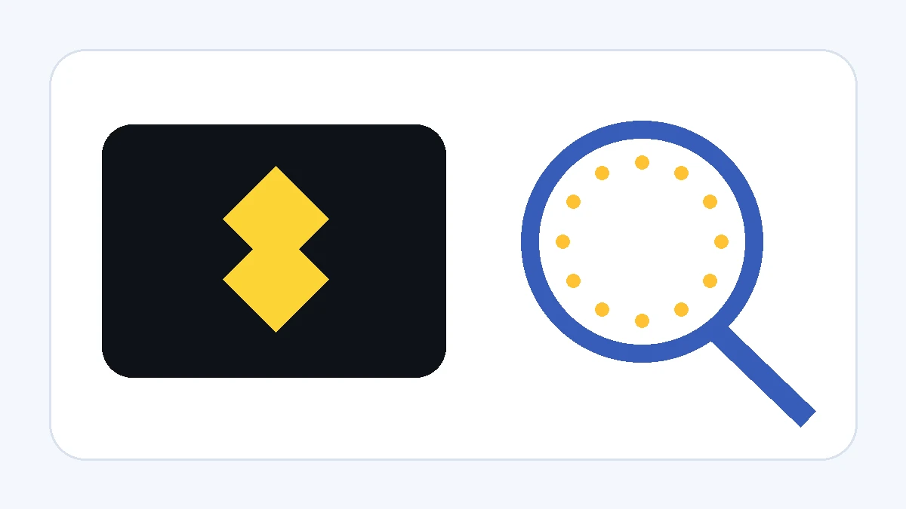
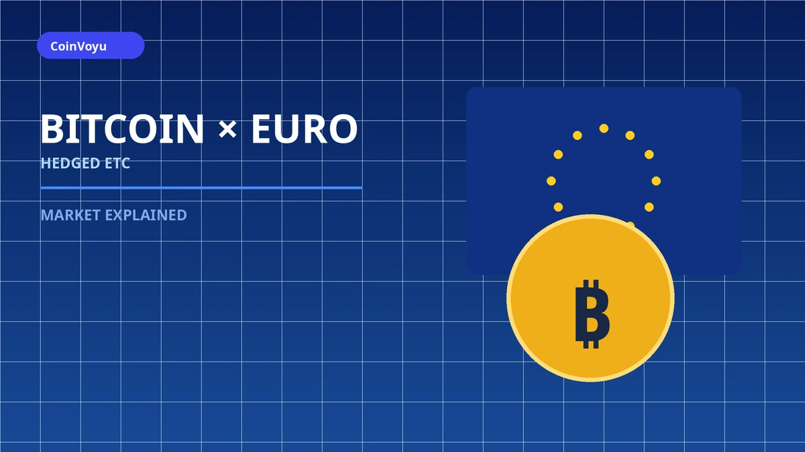
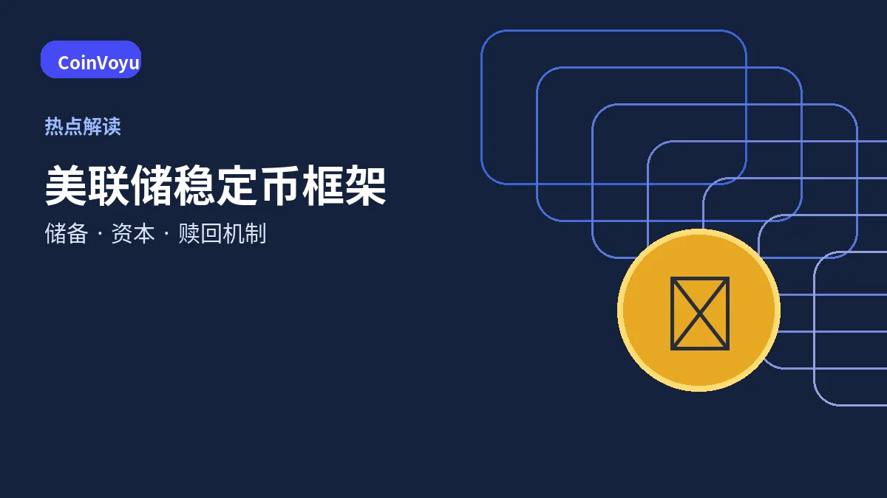
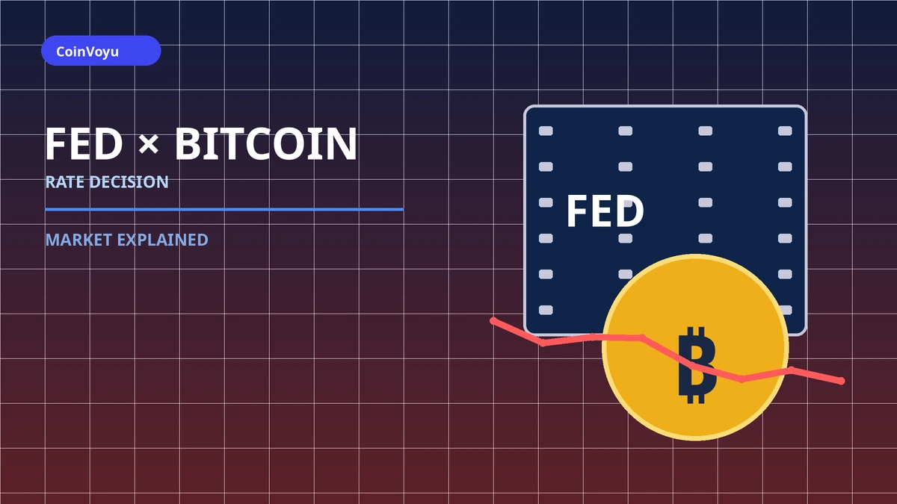
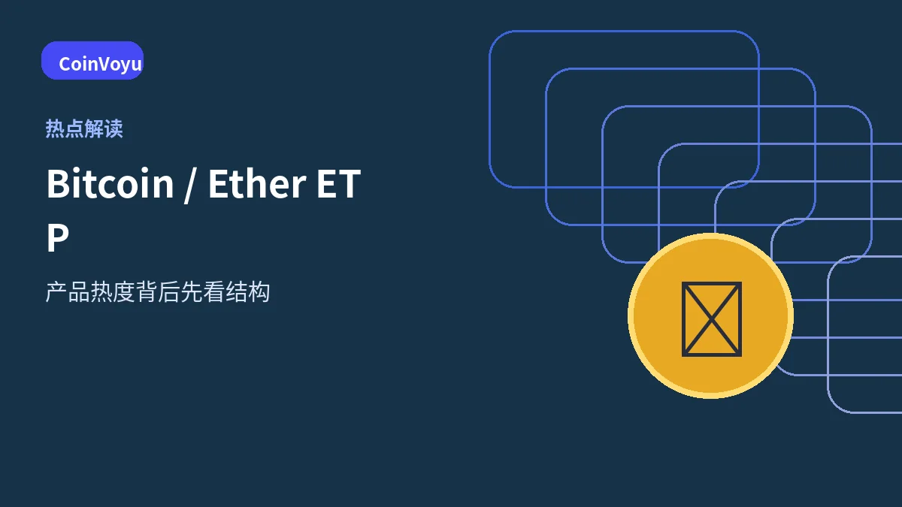
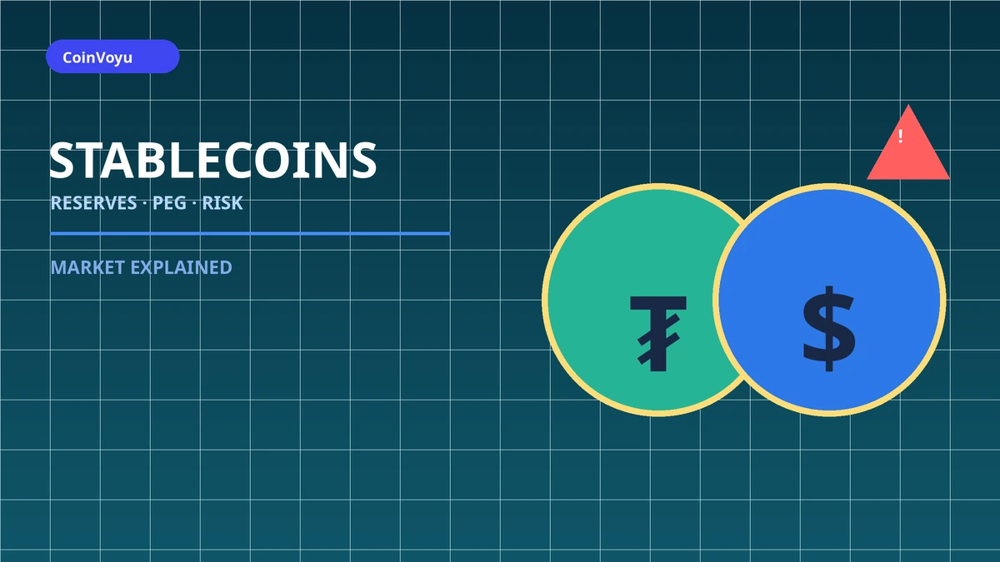

MARKET EXPLAINED
热点解读
不追逐短期涨跌，也不承诺预测结果。这里重点解释热点背后的机制，以及普通用户需要留意的风险。
 稳定币支付 · 2026-10-02
稳定币支付 · 2026-10-02Visa 最新数据：稳定币正在进入企业支付，普通用户应该看懂什么？
Visa 最新数据表明，稳定币关联卡正在更多进入企业和商业支付。本文解释稳定币为何从交易工具走向结算、财资管理和跨境支付基础设施。
阅读解读 → MiCA · DeFi · 2026-10-02MiCA 还要继续扩围？DeFi、质押和加密借贷可能成为下一阶段重点
ESMA 在 MiCA 审查中提出针对 DeFi、质押、加密借贷、营销与费用透明度的调整建议。本文解释这些建议目前处于什么阶段，以及普通用户需要关注什么。
阅读解读 →
交易所监管 · 2026-10-02Binance 欧洲业务再受 MiCA 审视：“反向招揽”到底是什么意思？
欧洲监管机构正在审视 Binance 对部分欧盟客户继续提供服务的安排。本文解释 MiCA 背景下 reverse solicitation（反向招揽）的含义、争议点和用户需要注意的事项。
阅读解读 → 稳定币支付 · 2026-09-30Citi 与 Coinbase 扩大稳定币支付合作，企业为什么开始接入链上支付？
从企业收款、法币转换和银行结算，看稳定币如何进入传统支付基础设施。
阅读解读 →
Bitcoin 产品 · 2026-09-30欧洲出现欧元对冲 Bitcoin ETC，买比特币为什么还要考虑汇率？
汇率对冲处理的是 EUR/USD 风险，不会消除 Bitcoin 本身的价格波动。
阅读解读 → 监管动态 · 2026-09-28SEC 发布加密资产证券法 FAQ，新手应该看懂什么？
先分清工作人员指导与正式规则，再理解功能性、去中心化和相关交易的判断框架。
阅读解读 →
稳定币 · 2026-09-28美联储提出稳定币监管框架，普通用户先看懂这 5 点
从储备资产、资本、风险管理和赎回机制理解稳定币监管为什么重要。
阅读解读 → MiCA · 2026-09-28欧洲央行建议调整 MiCA 稳定币储备规则，争议在哪里？
争议不是要不要储备，而是如何兼顾稳定币赎回与银行体系流动性。
阅读解读 →
最新政策 · 2026-09-17美联储加息25个基点，比特币为何没有立即大跌？
区分政策事实、市场预期与短期价格反应，不把一次利率决定理解成涨跌按钮。
阅读解读 → 机构动态 · 2026-09-17纳斯达克投资 Kraken 母公司，代币化股票意味着什么？
传统交易基础设施与加密平台进一步靠近，但代币化产品仍需看清权利结构。
阅读解读 → 监管动态 · 2026-09-17美国加密税收法案推进，普通用户先看懂什么？
委员会通过不等于正式生效，先分清立法阶段、适用范围和现行规则。
阅读解读 → 宏观环境 · 2026-09-17美联储利率变化，为什么会影响比特币？
理解利率、流动性、风险偏好与加密资产价格之间的关系。
阅读解读 →
市场产品 · 2026-09-17Bitcoin 与 Ether ETP 热度，新手该看什么？
产品获批或资金流动不等于资产没有风险，先了解产品结构。
阅读解读 →
稳定币 · 2026-09-17稳定币成为热点时，普通用户要注意什么？
从锚定机制、储备、网络与平台风险理解“稳定”的边界。
阅读解读 →